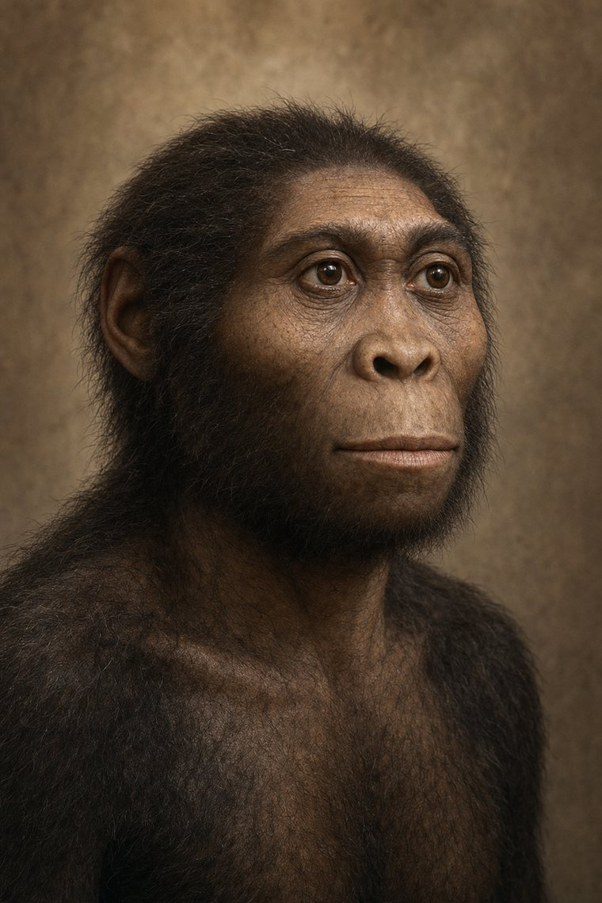

Ardipithecus ramidus
A walker in the woods, still keeping one grasping foot in the trees.
Overview
Ardipithecus ramidus is known from one of the most complete early-hominin skeletons ever found — Ardi, a female who lived 4.4 million years ago in what was then a humid woodland in Ethiopia. Her 2009 description rewrote textbook assumptions about how upright walking began.
Ardi shows that early hominins were not simply 'bipedal chimps'. Her anatomy is its own unique mix, suggesting the last common ancestor we shared with chimpanzees looked less chimp-like than once assumed.
Anatomy & Body
Ardi combined a pelvis modified for upright walking on the ground with a divergent, grasping big toe for climbing in the trees — a true mosaic. Her hands and limb proportions indicate careful palm-walking along branches rather than the knuckle-walking of living African apes.
She stood around 120 cm tall. The reduced canine teeth, similar in males and females, hint at lower levels of aggressive competition than in chimpanzees.
Brain & Cognition
Brain size remained ape-like, roughly 300–350 cc. As with earlier forms, the significance lies in locomotion and ecology rather than intelligence.
Behavior & Culture
Ardi lived in woodland alongside monkeys and forest antelope, eating a generalised omnivorous diet of plants, fruit and small animals. No stone tools are associated with Ardipithecus — toolmaking still lay more than a million years in the future.
Key Fossils
- ARA-VP-6/500 (“Ardi”) — a partial skeleton including skull, pelvis, hands and feet.
- More than 100 specimens from at least 36 individuals recovered from the Middle Awash.
Relationship to Us
Ardipithecus is widely seen as ancestral to, or very close to, the australopiths that followed — a crucial bridge between the deepest roots of the tree and 'Lucy's' kind.
Discovery & history
The first Ardipithecus teeth turned up at Aramis in Ethiopia's Middle Awash in 1992, found by Gen Suwa working with Tim White and Berhane Asfaw. The team originally named the species Australopithecus ramidus in 1994, then moved it to a new genus, Ardipithecus, the following year once its distinctiveness became clear.
Ardi herself — specimen ARA-VP-6/500 — was an excavation problem of a rare kind. The bones were so soft and crushed that they could not be lifted individually; blocks of sediment were removed intact, hardened, and then micro-CT scanned so the fossils could be reconstructed digitally rather than physically.
That work took fifteen years. The full description finally appeared in October 2009 as a package of eleven papers in Science, one of the largest single publications ever devoted to one hominin. More than 100 specimens from at least 36 individuals had been recovered by then.
The long delay and the team's tight control of access to the fossils drew public criticism from other researchers, and that friction still colours some of the debate around the species.
Debates & open questions
Ardi's importance rests on a claim that is easy to state and hard to test: that the last common ancestor we shared with chimpanzees did not look much like a chimpanzee.
Living chimps and gorillas knuckle-walk, and for most of the twentieth century it was reasonable to assume our ancestors had too. Ardi's hand and wrist show no knuckle-walking adaptations. Instead she appears to have moved along branches on her palms, while walking upright on the ground — a combination with no living analogue. If that reading is right, chimpanzees are not a living model of our past; they have their own long history of specialisation.
Two things remain disputed. The first is whether Ardipithecus is a hominin at all, or a stem form close to the split that could sit on either side of it. The second is the habitat. The discovery team reconstructed Aramis as closed woodland, which mattered because it undercut the old "savanna hypothesis" that upright walking evolved to cope with open grassland. In 2010 Thure Cerling and colleagues re-examined the isotopic and soil evidence and argued the setting was considerably more open — grassy woodland rather than closed forest. The discovery team rejected that reading.
The disagreement matters: it determines whether Ardi tells us bipedalism began in the trees' shade or on open ground.